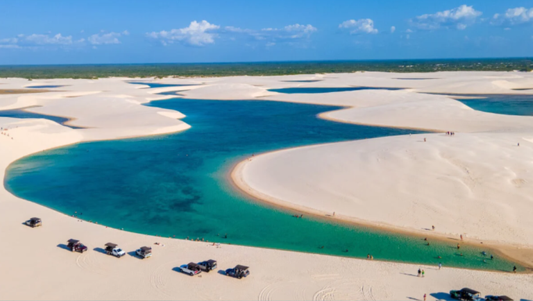

Praias do Brasil
O Brasil é um dos países tropicais conhecidos pelas praias mais bonitas do planeta. Confira as melhores praias para esse verão.
Jericoacoara

Jericoacoara é uma praia localizada na vila homônima, no município de Jijoca de Jericoacoara, no estado do Ceará, no Brasil. Está localizada a 295 km a oeste da capital do estado, Fortaleza. Foi eleita em 1994 pelo jornal estadunidense The Washington Post uma das dez praias mais bonitas do planeta.Em 2014 foi eleita pelo Huffington Post a quarta melhor praia da Terra.É um dos locais mais frequentados por praticantes de windsurfe no país. A praia é parte integrante do Parque Nacional de Jericoacoara.
Atrações:
- Pedra Furada.
- Duna do Pôr do Sol.
- Igreja Nossa Senhora da Consolação.
- Serrote.
- Farol de Jericoacoara.
- Campo das dunas.
Lençóis Maranhenses

Localizados no noroeste do Maranhão e distantes 250 km da capital São Luís, os Lençóis Maranhenses atraem turistas em busca do fenômeno único das lagoas interdunares à beira-mar. E o melhor dos Lençóis Maranhenses é que, a cada nova porção de água entre as dunas, a sensação de estar no paraíso se repete.
Atrações:
- Trilha pela Lagoa Bonita.
- Excursão às lagoas Azul e Peixe.
- Tour de 4x4 em Santo Amaro.
- Sobrevoo pelo Parque Nacional dos Lençóis Maranhenses.
- Tour de lancha pelo Rio Preguiça.
- Tour de Quadriciclo pelas lagoas dos Lençóis Maranhenses.
Praia do Pontal

Continuação da faixa de areia da Praia do Forte, Dunas e Foguete (as três em Cabo Frio), a Praia do Pontal é a primeira de Arraial do Cabo. Ela está bem escondida e quem chega à cidade pela estrada não consegue enxergá-la. Exatamente por isso, a Praia do Pontal costuma ser bastante tranquila e com pouco movimento, mesmo em dias quentes de verão.
Atrações:
- Passeio de Bugre em Arraial.
- asseio de Barco em Arraial do Cabo.
- Passeio de Barco Don Juan em Arraial do Cabo.
- Passeio de Barco Embarcação Valentyna Um Andar Arraial do Cabo.
Praia de Copacabana

localizada no bairro de Copacabana, na Zona Sul da cidade do Rio de Janeiro, no Brasil. É considerada uma das praias mais famosas do mundo. Limitada pela Avenida Atlântica, Copacabana é sede de eventos de grande porte, como campeonatos mundiais de futebol de areia, campeonatos mundiais de vôlei, shows, dentre outros eventos.
Atrações:
- Forte de Copacabana.
- Parque Garota de Ipanema.
- Feira de artesanato de Copacabana.
- Rua Barata Ribeiro.
- Museu Histórico do Exército e Forte de Copacabana.
- Copacabana Palace.
Praia Central Balneário Camboriú

A Praia Central é o principal ponto de encontro em Camboriú para quem quer pegar um sol, surfar ou fazer uma caminhada no calçadão de 6,8 km de extensão. No final de 2021, a faixa de areia foi alargada de 25 para 70 m, e agora você tem ainda mais espaço para curtir com a família. O mar pode ficar bem agitado, então vale redobrar o cuidado com as crianças.
Atrações
- Barra Sul.
- Molhe da Barra Sul.
- Teleférico.
- Praça Tamandaré.
- Calçadão da Central.